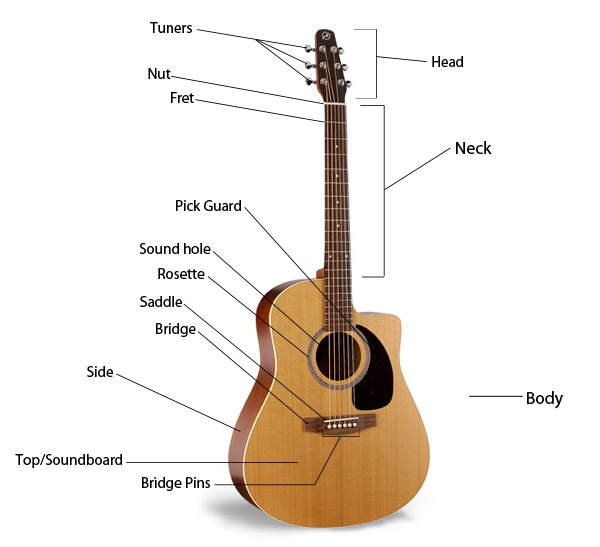
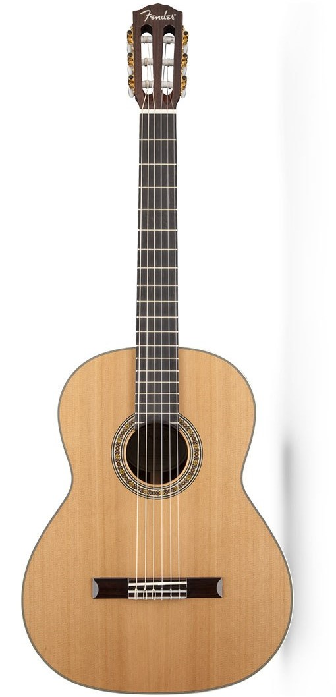
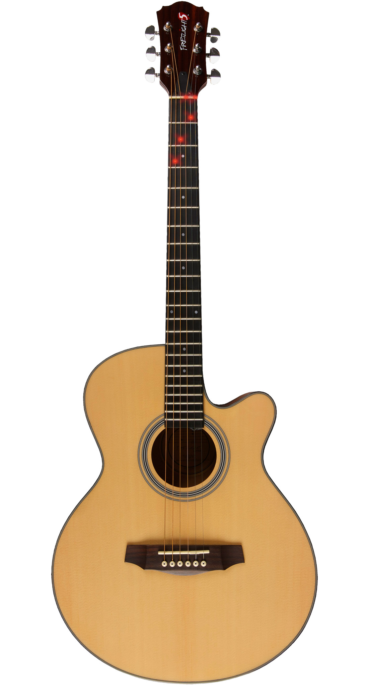
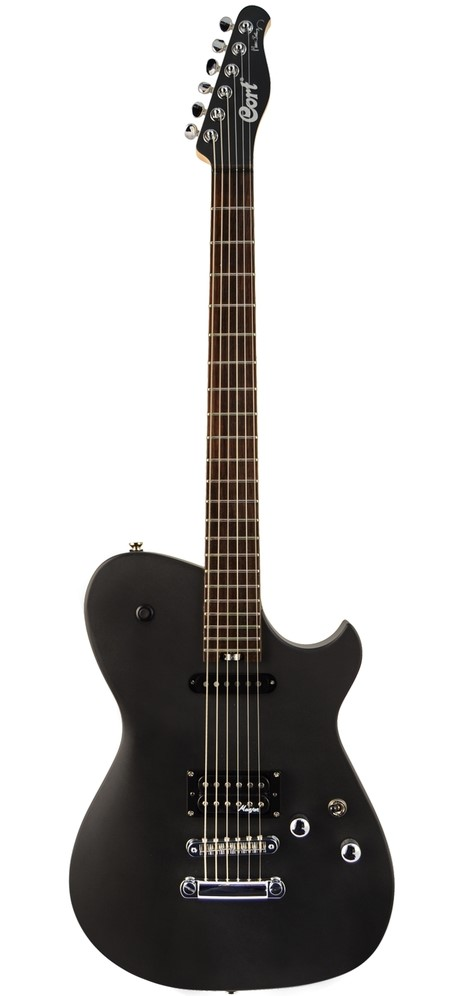
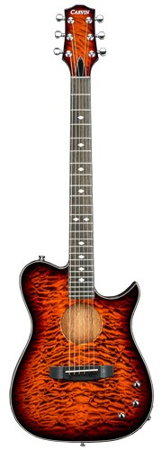

Lean your body forward slightly to support the guitar against your chest, for the poetry of the music should resound in your heart.
~Andres Segovia
Yeah! Like really, have you ever feel like playing a guitar is not just having fun or just passing your time.
Sometimes playing with guitar is having something to say through music, which shows how deep you are connected with music.
I mostly found people singing, dancing, banging drums, playing guitar, etc. and etc. Some others like to talk about music.
You can easily find people spreading incomplete knowledge about music or musical instruments.
But, let me tell you a little fact, most of them are ignorant, just gossiping and talking.
If you do not want to be one of their kind, then, you are really on a right place.
Lets learn all about guitar.
Guitar
 The guitar is one of the most widely played instruments in the world. It is incredibly versatile and is used in many different genres of music. From Spanish flamenco and accompanying folksongs to taking the spotlight as a solo instrument in classical works, the story of the acoustic guitar mirrors that of Western music. The guitar consists of a hollow wooden body with six strings stretched over it and along a narrow neck. Guitars usually have a single, round sound hole in the body. The strings can be strummed with the fingers or plucked. Some guitarists use a plectrum (triangular piece of plastic) to sound the strings.
History
A member of the family of musical instruments called chordophones, the guitar is a stringed instrument with which sound is produced by "plucking" a series of strings running along the instrument's body. While the strings are plucked with one hand, they are simultaneously fingered with the other hand against frets, which are metal strips located on the instrument's neck. The subsequent sound is amplified through a resonating body. There are four general categories of acoustic (non-electric) guitars: flat-top steel-stringed, arched top, classic, and flamenco.
References to guitar-like instruments date back many centuries, and virtually every society throughout history has been found to have used a variation of the instrument. The forerunners of today’s guitars were single-string bows developed during early human history. In sections of Asia and Africa, bows of this type have been unearthed in archaeological digs of ancient civilizations. Interestingly, one of these discoveries included an ancient Hittite carving—dating back more than 3,000 years—that depicted an instrument bearing many of the same features of today's guitar: the curves of the body, a flat top with an incurred arc of five sound holes on either side, and a long fretted neck that ran the entire length of the body.
As music technology developed, more strings were added to the early guitars. A four-string variety (named guitarra latina) existed in Spain in the late thirteenth century. The guitarra latina closely resembled the ancient Hittite carving except that the instrument now included a bridge that held the strings as they passed over the sound hole. When a fifth string was added in the early sixteenth century, the guitar's popularity exploded. A sixth string (bass E) was added near the end of 1700s, an evolution that brought the instrument closer to its present day functioning. The Carulli guitar of 1810 was one of the first to have six single strings tuned to notes in the present arrangement: E A D G B E.
Guitar technology finally made its way to the United States in the early nineteenth century, with Charles Friedrich Martin, a German guitar maker who emigrated to New York in 1833, leading the way. In the early 1900s, the Martin Company—now located in Nazareth, Pennsylvania—produced larger guitars that still adhered to the design of the classic models, especially the Spanish guitar. Another company, the Gibson Company, followed suit and began to produce large steel-string guitars with arched fronts and backs. Known as the cello guitar, this brand of instrument produced a sound more suited for jazz and dance clubs. Another major innovation of the early 1900s was the use of magnetic pickups fitted beneath the strings by which sound traveled through a wire into an amplifier. These instruments would later evolve into electric guitars.
Types
Classical guitars
Classical guitars, also known as "Spanish" guitars, are typically strung with nylon strings, plucked with the fingers, played in a seated position and are used to play a diversity of musical styles including classical music. The classical guitar's wide, flat neck allows the musician to play scales, arpeggios, and certain chord forms more easily and with less adjacent string interference than on other styles of guitar. Flamenco guitars are very similar in construction, but they are associated with a more percussive tone.
Acoustic guitars
Acoustic guitars form several notable subcategories within the acoustic guitar group: classical and flamenco guitars; steel-string guitars, which include the flat-topped, or "folk", guitar; twelve-string guitars; and the arched-top guitar. The acoustic guitar group also includes unamplified guitars designed to play in different registers, such as the acoustic bass guitar, which has a similar tuning to that of the electric bass guitar.
Electric guitars
Electric guitars can have solid, semi-hollow, or hollow bodies; solid bodies produce little sound without amplification. Electromagnetic pickups convert the vibration of the steel strings into signals, which are fed to an amplifier through a patch cable or radio transmitter. The sound is frequently modified by other electronic devices (effects units) or the natural distortion of valves (vacuum tubes) or the pre-amp in the amplifier. There are two main types of magnetic pickups, single- and double-coil (or hum bucker), each of which can be passive or active. The electric guitar is used extensively in jazz, blues, R & B, and rock and roll.
Semi-acoustic guitars
A semi-acoustic guitar or hollow-body electric is a type of electric guitar that originates from the 1930s. It has both a sound box and one or more electric pickups. This is not the same as an acoustic-electric guitar, which is an acoustic guitar with the addition of pickups or other means of amplification, added by either the manufacturer or the player.
Interesting Facts About Guitar
(1) Biggest electric guitar in the world is 13.26 meters long, 1023 kg build in 2001.
(2) A seven stringed guitar is known as "Gypsy Guitar" or "Russian guitar".
(3) An average guitar range is almost four Octaves
(4) The 1st Electric guitar was created in 1931, it has metal body.
(5) 1st wooden electric guitar was created in 1950.
(6) Mostly toilets flush in E flat.
(7) Jimi Hendrix is the influential guitarist of all the time.
(8) The smallest guitar is only 10 microns long, is created by masters of the Cornell university.
(9) The expensive guitar was sold at a charity auction for $2.8 million (rupees 28 Lakh), signed by 19 famous guitarists.
(10) Chris Black Englishman married with a guitar in 1995, it was Fender Stratocaster.
Where To Learn More
Books
Cumpiano, William R. Guitarmaking: Tradition & Technology. Rosewood Press, 1987.
Evans, Tom and Mary Anne. Guitars: Music, History, Construction and Players from the Renaissance to Rock. Facts on File, 1977.
Hill, Thomas. The Guitar: An Introduction to the Instrument. Watts Publishing, 1973.
How It Works: The Illustrated Science and Invention Encyclopedia. Vol. 9. H. S. Stuttman, 1983.
Kamimoto, Hideo. Complete Guitar Repair. Oak Publications, 1975.
Wheeler, Thomas. The Guitar Book. Harper & Row, 1974.
Periodicals
Del Ray, Tiesco. "Off the Wall: The Theory of Reverse Ergonomics," Guitar Player. March, 1986, p. 102.
Sievert, Jon. "Steinberger Factory Tour," Guitar Player. December, 1988, p. 38.
Smith, Richard. "Inside Rickenbacker: New Factory, Old Traditions," Guitar Player. February, 1990, p. 61.
Widders-Ellis, Andy. "Tomorrow's Acoustics: The Dawning of a New Golden Age," Guitar Player. April, 1992, p. 43.
- Jim Acton